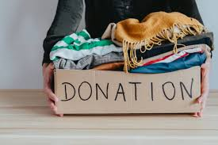
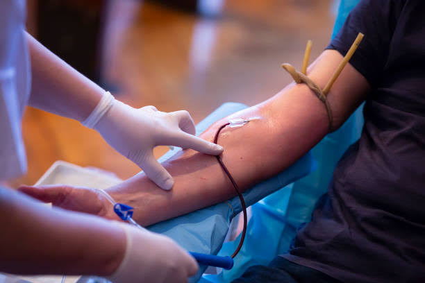

Kindness Exchange is a trust-based platform created with a single goal: to spread compassion through action. We connect those with the heart to give and those with the need to receive. Whether it’s books for education, blood for emergencies, or clothes for warmth—we believe in turning empathy into impact. Started by a group of passionate youth, our mission is to make kindness a habit and giving a lifestyle. We work on the belief that access to basic needs should never be a privilege but a right—shared freely and with dignity.

Clothing donation is a charitable act where individuals or organizations contribute gently used or new clothes to those in need. It helps provide essential garments to people facing financial hardships or living in impoverished conditions. These donations are often collected by nonprofit organizations, shelters, or community centers. Donating clothes is a simple yet impactful way to support others and promote sustainability.

Blood donation is the voluntary act of giving blood to help those in need, especially during medical emergencies or surgeries. It plays a crucial role in saving lives and improving the health of individuals facing severe conditions like trauma, cancer, or blood disorders. Donating blood is safe, quick, and can be done regularly. It’s an invaluable gift that can make a significant difference in someone’s life.
Every book donated helps a student move closer to a dream. Every drop of blood saves a life. Every shirt shared brings warmth to someone who needs it most. We’re building a community where kindness flows, and help is just a click away.